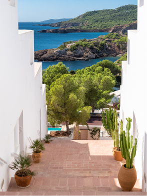
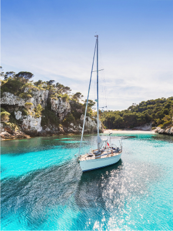
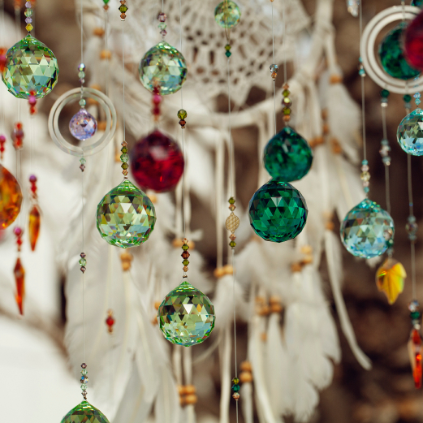
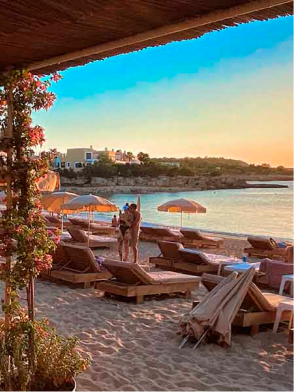
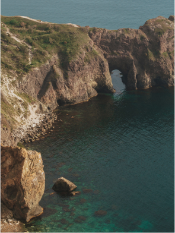
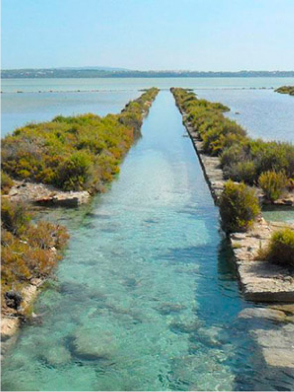

Todas
Que hacer
Que visitar
Dónde comer
Vida nocturna

Dalt Vila: El Corazón Histórico y Cultural de Ibiza
Pasea por las calles empedradas de Dalt Vila, el casco antiguo de Ibiza declarado Patrimonio de la Humanidad, donde la historia y las vistas panorámicas te transportarán a otra época.
Las fiestas de Ushuaïa Ibiza son el epicentro del entretenimiento de lujo en la isla. Con un ambiente vibrante y lleno de energía, este icónico beach club ofrece actuaciones de los DJs más reconocidos del mundo.

Exploración de Formentera en Velero
Haz una escapada privada a la isla de Formentera, navegando en velero para descubrir sus playas vírgenes y aguas turquesas, lejos de las multitudes.

Mercadillo semanal Las Dalias
El Mercado de Las Dalias es un emblemático espacio bohemio en Ibiza, lleno de color, arte y creatividad. Todos los sábados, se transforma en un vibrante mercado donde puedes descubrir piezas únicas de artesanía, moda, joyería y arte local.
Lío Ibiza: donde la Gastronomía, el Cabaret y el Glamour se encuentran
Lío Ibiza es una experiencia única que combina alta cocina, espectáculos de cabaret de primer nivel y una vibrante vida nocturna en un entorno de lujo incomparable. Con vistas espectaculares al puerto y Dalt Vila.

Atardeceres en Beach Clubs Exclusivos
Vive los legendarios atardeceres de Ibiza desde un beach club de lujo, disfrutando de cócteles exclusivos en un ambiente elegante y relajado.

Visita Privada a Es Vedrà en Helicóptero
Admira la mística roca de Es Vedrà desde el aire con una excursión en helicóptero, disfrutando de vistas incomparables de la isla.

Las Salinas: Playa Exclusiva y Reserva Natural en Ibiza
Una de las playas más icónicas y exclusivas de Ibiza, rodeada por la impresionante Reserva Natural de Ses Salines, donde la naturaleza y el lujo se encuentran.